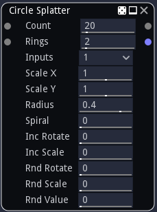

Circle Splatter node¶
The Circle Splatter node splats several instances of its input around a circle or a spiral. Overlapping instances are mixed with each other using a lighten filter.
The Circle Splatter also has a color version whose input is in RGBA format.
Inputs¶
The Circle Splatter node accepts two inputs:
The Source inputs is the image to be splat into the output.
The Mask input is a greyscale image that is used as a mask and affects each instance’s value.
Outputs¶
The Circle Splatter node outputs the splat image.
The greyscale splatter has a secondary output that assigns a random color to each splat instance.
Parameters¶
The Circle Splatter node accepts the following parameters:
Count, the number of instances of the source image in the result, including those canceled by the mask.
Rings, the number of rings of the circle or spiral pattern.
Inputs is the number of alternate shapes in the input (1, 4 or 16). Images containing several shapes can easily be created using the Tile2x2 node.
Scale X and Scale Y are the scale along X and Y axes applied to each instance.
Radius is the radius of the outer circle (or distance to center of the outer instance when a spiral is generated)
Spiral can be used to select between a circle or a spiral pattern (or anything in between)
IncRotate is the rotation increment applied to each instance.
IncScale is the scale increment applied to each instance.
RndRotate is the maximum angle of the random rotation applied to each instance.
RndScale is the amount of random scaling applied to each instance.
RndValue is the amount of random value applied to each instance.
Example images¶